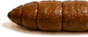
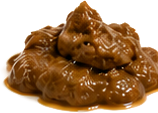
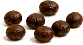
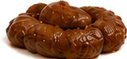
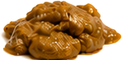
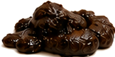
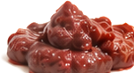

便便觀察表七型對照 × 紅燈訊號
DAILY POOP CHECK
鏟屎的時候
鏟屎的時候
順手看一眼
便便是主子每天留給你的健康報告 ~ 只是大部分毛家長都直接鏟掉了
三大類顏色觀察七型對照紅燈訊號
MAIN 3
先認得這三種
90% 的情況都落在這三種裡面
📷 以下皆為示意圖
理想便便健康的樣子 ~ 看到這種通常可以放心 條狀成形好撿起來不黏砂
軟便・值得觀察不一定是大問題 ~ 但值得多觀察幾天 一撿就散開黏在砂上氣味特別重沾到屁屁毛
一顆一顆便便調整生活習慣，便便會更順暢 水喝太少活動量下降飲食變化
COLOR
便便顏色觀察
吃的東西也會影響顏色 ~ 重點是跟平常比有沒有變
📷 示意圖 ~ 實際顏色會因光線與貓砂而不同
咖啡色常見狀態
偏黃飲食變化・可觀察
偏黑建議留意
紅色／有血絲建議詢問獸醫
TYPE 01–07
完整七型對照
想看更細的分法 ~ 第 3、4 型是理想的樣子
1
一顆顆硬球又乾又硬、粒粒分明，很難排出來便秘
2
香腸狀・表面凹凸結成一條但表面坑坑疤疤，排的時候會用力便秘
3
香腸狀・表面有裂痕成形、稍微有點乾，屬於正常範圍正常
4
像香腸或蛇・表面光滑最理想的樣子 ~ 好排、好鏟、不黏砂最理想
5
斷邊光滑的柔軟塊偏軟但還算成形，容易通過偏軟
6
粗邊蓬鬆・糊狀幾乎不成形、黏在砂上鏟不太起來腹瀉
7
水狀・沒有固體塊完全是液體 ~ 這型要特別留意脫水腹瀉
CHECK POINTS
除了形狀，還要看這四個
形狀只是其中一項 ~ 這四個一起看才準
1顏色正常是深褐色 ~ 太黑、灰白、鮮紅都要留意，吃的東西也會影響顏色
2次數多數成貓一天 1–2 次 ~ 重點不是幾次，是「跟平常比有沒有變」
3氣味本來就不會香 ~ 但突然變得特別臭、跟平常明顯不同就要注意
4裡面有什麼黏液、血絲、沒消化的食物、毛、線頭、塑膠 ~ 看到都要記錄下來
RED FLAGS
看到這些先別觀察，直接找獸醫
這幾種情況拖不得
!
血便
鮮紅色，或是像柏油一樣的黑色便便
!
腹瀉超過 24 小時
貓體型小，脫水比你想的快很多
!
超過 48–72 小時沒排便
完全沒有便便，不是「這幾天比較少」
!
一直進砂盆卻排不出來
又叫又用力卻沒東西 ~ 公貓可能是尿道阻塞，這是會致命的急症
!
同時有嘔吐、不吃、精神變差
便便異常加上這些，就不要再等了
NEXT
🗺️貓咪身體地圖每個部位在哪、負責什麼›
⚖️主子體重紀錄每週記一筆 ~ 看曲線不看單次›
🔰我家貓有狀況，先看哪裡依症狀找下一步›
💬拍下來問香菇爸不確定是哪一型 ~ 拍照傳給我看看↗
還可以看這些
關於這份對照表
頁面內便便圖片皆為示意圖，用來幫助辨認形狀與顏色，不是真實個案照片
形狀分型參考布里斯托大便分類法（Bristol Stool Scale）~ 這是一份幫助你「描述」與「記錄」的觀察工具
便便觀察不能取代獸醫診斷 ~ 主子身體有狀況請務必先就醫，這頁只是幫你把看到的東西講清楚
© 2026 香菇爸・原創內容